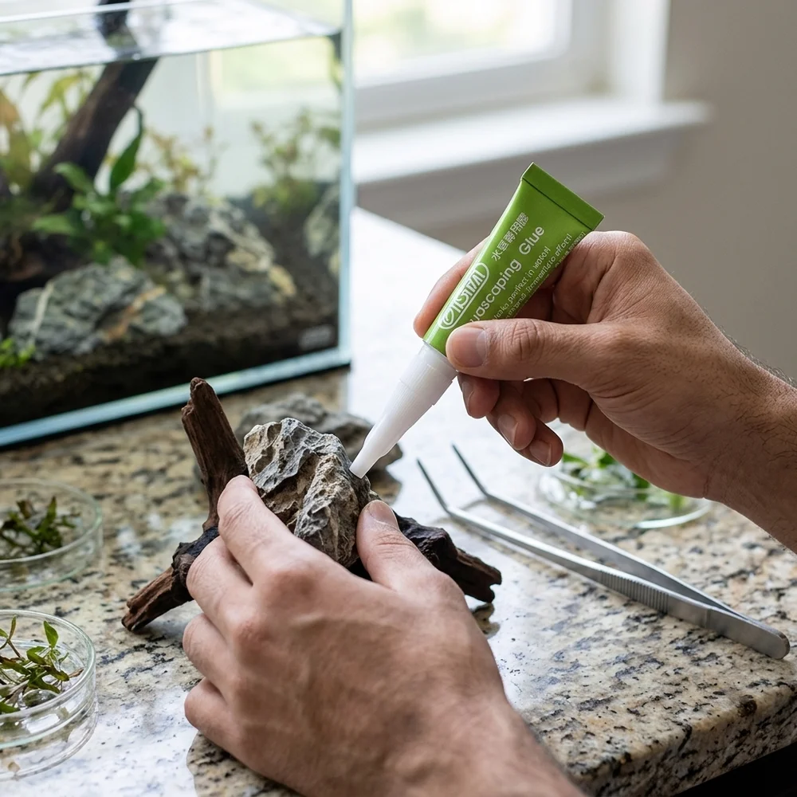

الأحواض الجاهزة
حوض نهري جاهز مزروع – 33 لتر
١٬٥٩٩ ر.س
أكوا هافن / عوالم مائية
الماء. الضوء. الحياة.
قطعة من الطبيعة،
في قلب مساحتك.

أجزاء صغيرة. عالم كامل.
ابدأ بالحوض، أو بورقة خضراء.
ستجد التفاصيل التي تبني حولها فكرتك.
من المجموعة
صور وأسعار من لقطة مرجعية للمجموعة؛ هذه النسخة لمعاينة التصميم.
ما وراء الزجاج
حجر يجد مكانه. ضوء يلامس الماء.
اقترب من الأشياء الصغيرة التي تمنح الحوض ملامحه.

العالم الكبير،
في أصغر التفاصيل.
أبعد من اختيار القطعة
استكشف صورًا من أرشيف أكوا هافن،
ثم اختر الطريق المناسب لحوضك.

صور وتكوينات وتفاصيل الأحواض.
استكشف أعمالناالخدمات
تصميم مخصص، صيانة، استشارة، وحلول للمساحات التجارية.
استوديو الأحواض
غيّر الأبعاد والزجاج والإضافات.
شاهد تصوّر فكرتك، واحفظ مسودة
لتكملها لاحقًا في المتصفح نفسه.

خذ وقتك. ابحث عن التفصيل الذي يشبه فكرتك.
دليل التجربة والأسئلة الشائعة